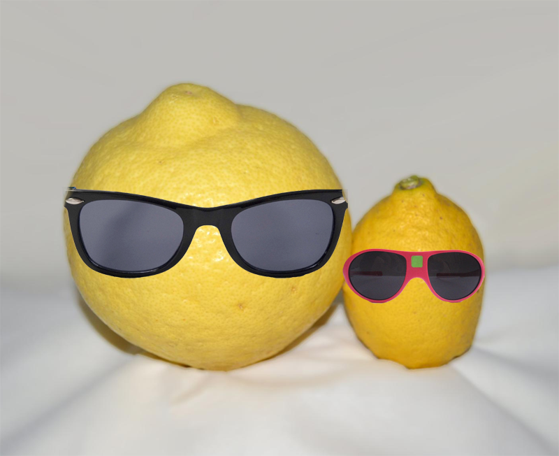

Le contenu de ce site est entièrement fictif.
Toute ressemblance avec la réalité est purement fortuite.
Copyright © 2022 Vienne Mathys. Tous droits réservés.
Si vous êtes arrivé ici, il est possible que vous ayez perdu toute foi en l'humanité. Cela est parfaitement normal et compréhensible. C'est pourquoi La Sainte Mangue est descendue de son Arbre Sacré pour nous prodiguer ses enseignements divins. Par l'intermédiaire de sa représentation humaine, La Raison, La Sainte Mangue espère faire de ce monde un havre de paix pour tous les êtres la composant.
Nous sommes Le Culte de la Sainte Mangue. C'est une organisation pacifique à but non-lucratif et non religieux. Nous ne sommes pas une secte non plus. Nous nous décrivons comme un groupe agissant pour le bien de l'humanité ainsi que pour tous les êtres vivants. Nous agissons de diverses manières, comme en organisant des réunions ou en participant au débat public. Nous existons depuis toujours comme peut le prouver ce site qui existait bien avant 2022 qui se trouve aussi être une action de La Sainte Mangue.
La République des Mangues
Nous mettons en avant la chair de la vie. La Sainte Mangue offre son être pour que nous puissions méditer et avancer sur notre destinée. Le premier individu ayant reçu cette bénédiction, La Raison, écrivit les préceptes suivants :
La Sainte Mangue est partout autour de vous, et ce, depuis la nuit des temps.
Voici des exemples de personnalités qui suivent nos préceptes :
| Nom | Profession |
|---|---|
| Emmanuel Macron | Président de la République |
| Jean-Claude Van Damme | Acteur de renom |
| Le pape François | Pape |
| Amangus | Cousin éloigné de l'Impostor |
| Mario | Plombier célèbre pour la répression du royaume voisin |
| Le Colonel Sanders | Leader sur le marché du Fried Chicken |
| Olivier de chez Carglass | "Une promo comme ça, faut pas la rater !" |
| Dwayne Johnson | Acteur et rappeur |
Notre groupe n'est malheureusement pas apprécié de toutes et tous. Certains nous voient comme une secte, d'autres comme des individus tordus. Nous ciblons en particulier le groupe nommé Le culte de l'Angélique Citron. Ce groupe, dont la laideur du nom n'a d'égal que la débilité de ses doctrines, ne cesse de tenter de nous mettre des citrons dans les roues. Nous le combattrons avec vigueur pour la gloire de La Raison !
